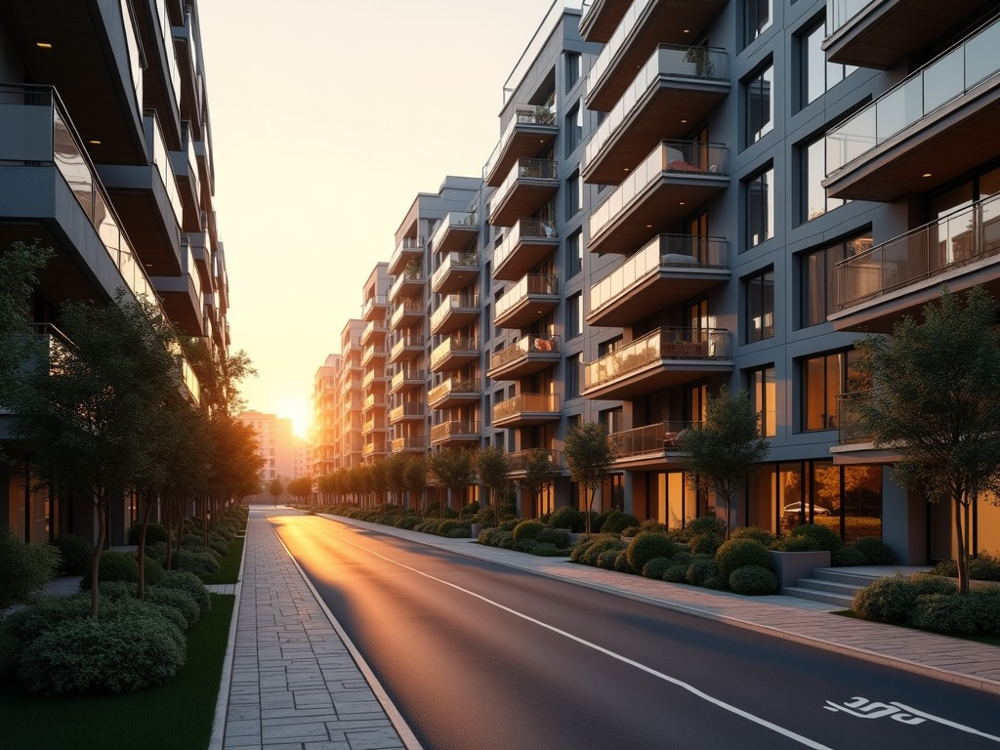
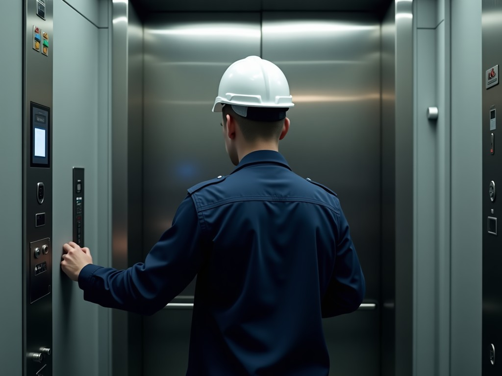
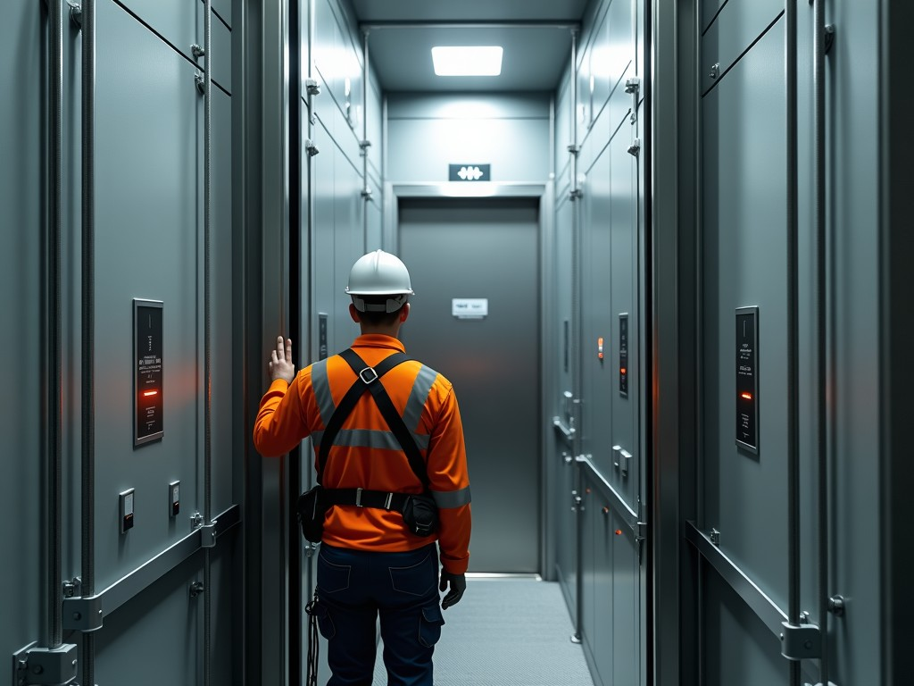
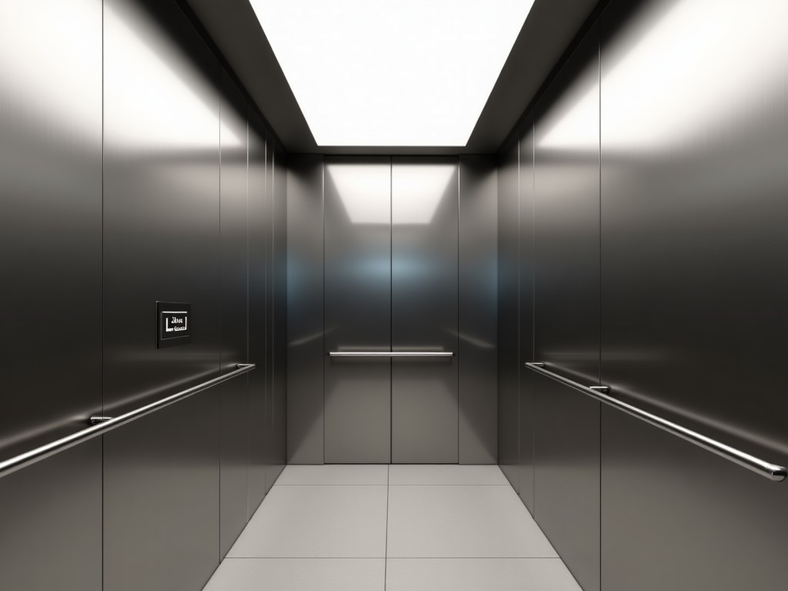
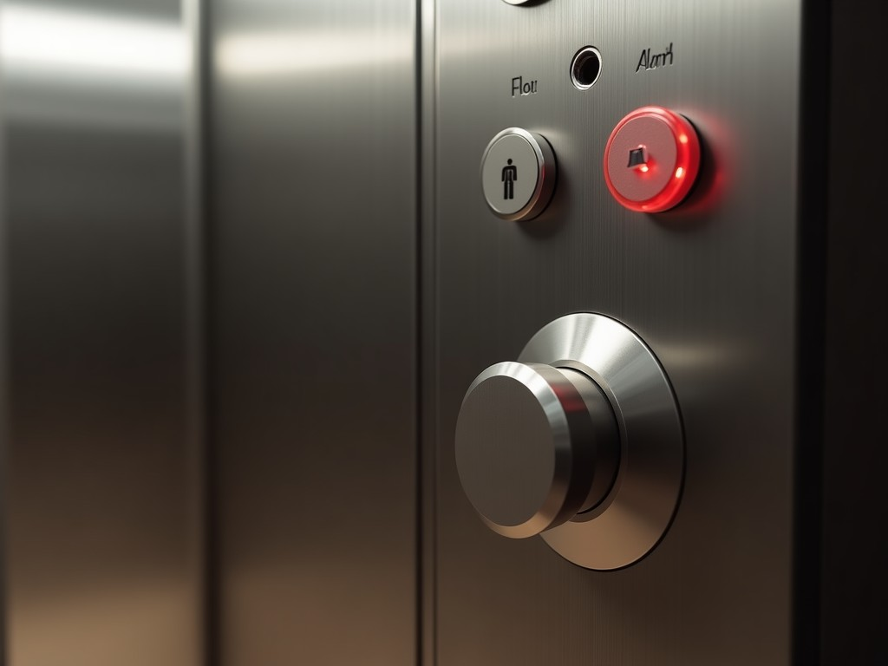
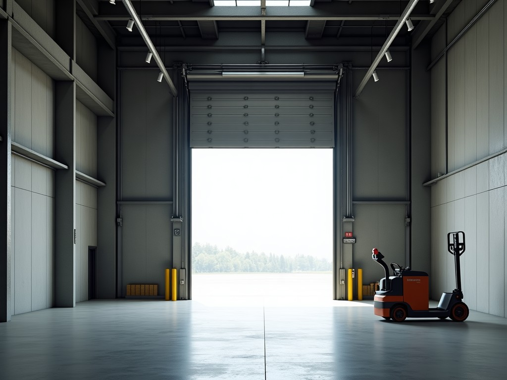
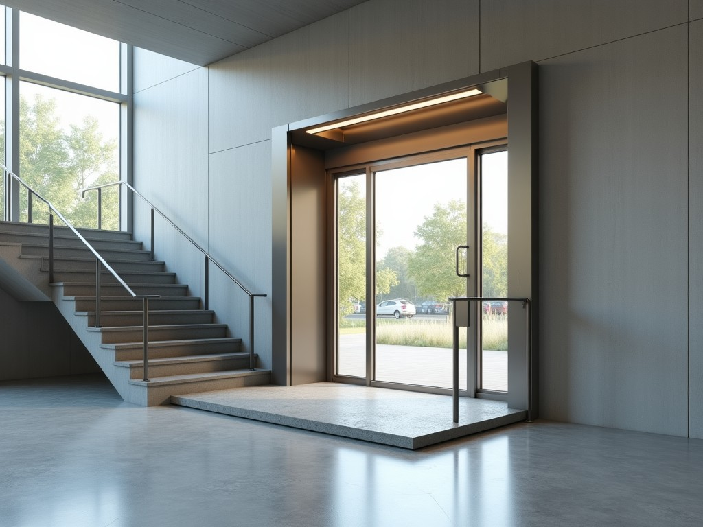
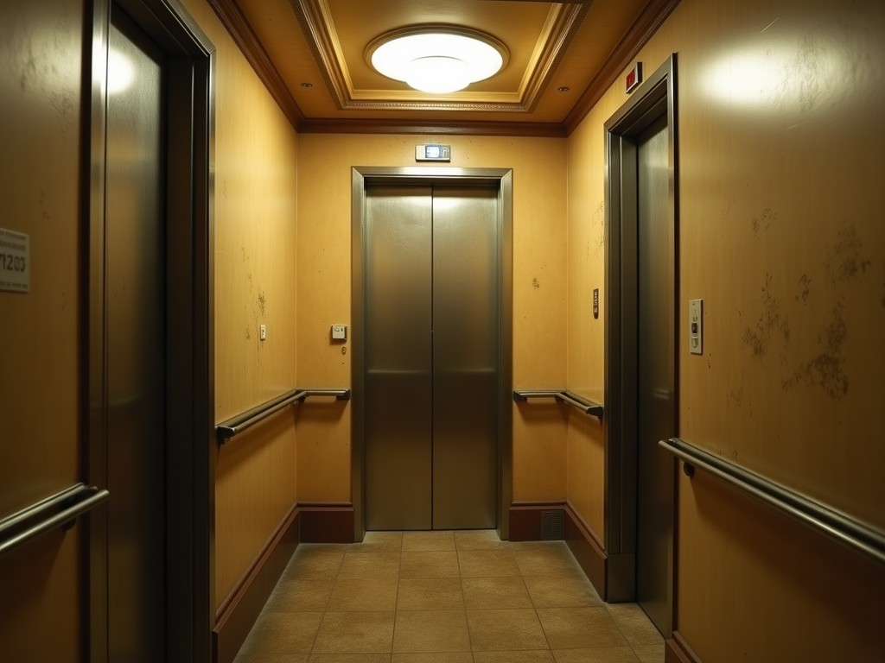

Aylık bakım sözleşmesi, yıllık muayeneye hazırlık, etiket eksiklerinin giderilmesi. Her bakım kayıtlı, her arıza raporlu.
Arıza bildir Bakım teklifi alArızayı seçin, adresi yazın; bildiriminiz takip koduyla ekibe düşsün. Asansörde biri kaldıysa önce arayın.

Yıllık kontrolden sonra asansöre renkli etiket yapıştırılır. Renginize dokunun; ne anlama geldiğini ve ne yapmanız gerektiğini görün.
Google'da "asansör bakım", "asansör revizyon" diye arayan, doğrudan ilgili sayfaya gelir. Taslakta kartlar; yayında her biri ayrı, detaylı sayfa.

Yeni binaya ya da mevcut binaya sıfırdan asansör: proje, kuyu ölçüsü, montaj ve ilk muayene.
Aylık bakım sözleşmesiyle asansörünüz yönetmeliğe uygun ve sorunsuz çalışır; her bakım kayıt altında.

Eski asansörü yıkmadan yenileme: kabin, kapı, kumanda panosu, motor; muayene eksiklerinin giderilmesi.

Asansörde kalma, kapı açılmama, katta durmama, ses ve titreme. Gece gündüz arıza ekibi.

Depo, fabrika, otel ve market için yük asansörü: kapasite hesabı, montaj ve bakım.

Giriş merdiveni ve katlar arası engelli platformu; binanıza erişilebilirlik.
Binanızı tarif edin; aylık bakım teklifini hazırlayıp size gönderelim. Mevcut firmanızdan geçiş de yapılır.
Son bakım tarihini girin; bir sonraki aylık bakımı takviminize ekleyelim.
Eski kabin, sarı etiket, sık arıza. Kabin, kapı, kumanda ve motoru yenileyip asansörünüzü bugünün standardına getiriyoruz. Çizgiyi kaydırın.

ÖnceSonraTaslaktaki görseller temsilîdir; yayında kendi işlerinizin fotoğraflarıyla.
Panik yapmayın; asansörde kalmak en sık görülen ve çoğunlukla zararsız arızadır.
Her ilçe için ayrı sayfa: "Şişli asansör bakım" diye arayan, Şişli sayfanıza gelir. Bir ilçeye dokunun.
Piyalepaşa Mah. Işıklı Sk., Beyoğlu / İstanbul
☎ 7/24: 0536 883 66 61
Yol tarifi TikTok'ta izle360° GÖRÜNÜM
Görüntüyü fareyle ya da parmağınızla çevirin; bulunduğumuz sokağı ve girişimizi 360° gezin, gelirken zorlanmayın.
Görüntü: Google Street View · Yol tarifi al